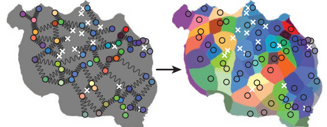
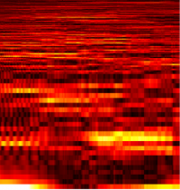

People & Research

François Baccelli
baccelli@math.utexas.edu
Depts. of Mathematics and Electrical Engineering
Website · Publications
Depts. of Mathematics and Electrical Engineering
Website · Publications
François Baccelli is Simons Math+X Chair in Mathematics and ECE at UT Austin. His research directions are at the interface between Applied Mathematics (probability theory, stochastic geometry, dynamical systems) and Communications (network science, information theory, wireless networks). He is co-author of research monographs on point processes and queues (with P. Brémaud), max plus algebras and network dynamics (with G. Cohen, G. Olsder and J.P. Quadrat), stationary queuing networks (with P. Brémaud), stochastic geometry and wireless networks (with B. Blaszczyszyn).
Laura Colgin
colgin@mail.clm.utexas.edu
Dept. of Neuroscience, Center for Learning and Memory
Website · Publications


Dept. of Neuroscience, Center for Learning and Memory
Website · Publications
Laura received her PhD from the Institute for Mathematical Behavioral Sciences at UC Irvine, and she completed her postdoctoral training in the lab of Nobel Laureates Edvard and May-Britt Moser. Her research uses state-of-the-art multisite recording and multivariate analysis techniques to address several key questions in systems neuroscience, including how the hippocampus stores and retrieves memories, and how neuronal computations in the entorhinal-hippocampal network create the spatial component of these memories.
Hippocampal rhythms and neuronal coding
Why does the rhythmic state of the hippocampal network vary over time? How do neurons in the entorhinal-hippocampal network code information during different rhythmic states? The Colgin Lab employs statistical models to estimate how hippocampal rhythms depend on an animal’s prior experience or current behavior. They view distinct hippocampal rhythms as windows into different memory processing states. With this viewpoint in mind, they use Bayesian reconstruction methods to decode activity of ensembles of hippocampal neurons during different types of rhythms.
Meg Donahue
mmdonahue@utexas.edu
PhD student · Dept. of Neuroscience
PhD student · Dept. of Neuroscience
electrophysiology · hippocampus · spatial cognition
Emma Robson
emmarobson@utexas.edu
PostDoc · Dept. of Neuroscience
Website
PostDoc · Dept. of Neuroscience
Website
neuroscience · cell biology · physiology
Jayanth R T
jayanth.r.t@utexas.edu
PhD student · Dept. of Electrical & Computer Engineering
Website · Publications
PhD student · Dept. of Electrical & Computer Engineering
Website · Publications
spatial cognition · hippocampus · real-time decoding · computational modeling

Wilson Geisler
w.geisler@utexas.edu
Dept. of Psychology, Center for Perceptual Systems
Website · Publications


Dept. of Psychology, Center for Perceptual Systems
Website · Publications
Geisler’s primary research interests are in vision, computational vision, and visual neuroscience. His research combines behavioral studies, neurophysiological studies, studies of natural stimuli, and mathematical analysis. Current research is directed at how to perform perceptual tasks optimally (the “theory of ideal observers”), on the relationship between the statistical properties of natural stimuli and the performance of the visual system, on the properties and theory of eye movements in natural tasks, and on the relationship between visual performance and the neurophysiology of the visual system.
Identification in natural scenes
How can the brain identify known signals under natural conditions where the properties of the background and the amplitude of the signal are unknown from one occasion to the next? We measure the statistical properties of natural backgrounds that are relevant for specific tasks such as object identification and then determine what neural computations would be optimal for performing those tasks. The scene statistics and optimal computations provide principled hypotheses that are tested in neural and behavioral experiments.
Understanding camouflage detection
Camouflage in nature evokes fascination and wonder. But less appreciated is the selection force that shaped them: the visual detection systems of their predators and prey. Our goal is to better understand these visual mechanisms that detect camouflage. We consider the hardest case where the camouflaging object has exactly mimicked its background luminance, contrast, colour and texture. We develop a detection model using the stimulus statistics and ideal observer theory, and compare it against the detection performance of humans in controlled psychophysical experiments. These findings can also be applied to compare different textures for camouflage, design better camouflage, and to find best or worst hiding spots.
Visual search in simple and natural backgrounds
Finding objects in the surrounding environment is a fundamental visual task. We combine natural scene statistics, biological constraints, and Bayesian statistical decision theory to develop principled hypotheses for the neural computations in visual search. We test these hypotheses by measuring and analyzing human search accuracy and eye movements. Recently we found that when humans are searching a large area, they often have reduced sensitivity in and near the direction of gaze (fovea). We show that this ‘foveal neglect’ is the expected consequence of an attention mechanism that optimally distributes sensitivity gain over neurons in visual cortex rather than over locations in visual space.
Abhranil Das
abhranil.das@utexas.edu
PostDoc · Dept. of Psychology
Website · Publications
PostDoc · Dept. of Psychology
Website · Publications
physics · vision science · computational neuroscience · psychedelic science
Calen Walshe
calen.walshe@gmail.com
PostDoc · Dept. of Psychology
Website · Publications
PostDoc · Dept. of Psychology
Website · Publications
visual neuroscience · cognitive science
Zhen Wei
zhen.wei@utexas.edu
PhD student · Dept. of Neuroscience
PhD student · Dept. of Neuroscience
visual psychophysics · computational modelling · visual neurophysiology
Liu Yuezhang
lyz@utexas.edu
PhD student · Dept. of Neuroscience
Website · Publications
PhD student · Dept. of Neuroscience
Website · Publications
computational neuroscience · deep reinforcement learning · memory
Anqi Zhang
anqizhang@utexas.edu
PhD student · Dept. of Physics
Website · Publications
PhD student · Dept. of Physics
Website · Publications
vision science · statistical physics · computational neuroscience

Robbe Goris
robbe.goris@utexas.edu
Depts. of Neuroscience and Psychology, Center for Perceptual Systems
Website · Publications


Depts. of Neuroscience and Psychology, Center for Perceptual Systems
Website · Publications
Robbe Goris’ research seeks to uncover the neural basis of our visual capabilities. He uses behavioral experiments, computational theory, and monkey electrophysiology to study representation and computation in the primate visual system. Current projects in his lab are focused on the neural representation of sensory uncertainty, and on the relation between natural image statistics and cascaded computation in the visual cortex. Robbe received his Ph.D. in 2009 from KU Leuven (advisors: Johan Wagemans and Felix Wichmann), went on to do a post-doc at NYU (advisors: Tony Movshon and Eero Simoncelli), and joined UT Austin as assistant professor in Fall 2016.
Predictive vision
The brain is built to predict. It predicts the consequences of movement in the environment, the actions needed for survival, but also fundamental things such as what we will see in the coming seconds. Visual prediction is difficult because natural input evolves according to irregular, jagged temporal trajectories. We introduced the “temporal straightening” hypothesis, positing that sensory systems seek to transform their input such that neural representations follow straighter temporal trajectories. This facilitates prediction: It is easier to predict the progression of a straight line than of an irregular curve. Our hypothesis enjoys some empirical support: We found that the human visual system selectively straightens natural videos. Temporal straightening may thus be a general objective of the visual system adapted to the statistics of the natural environment. We are currently studying the neural basis of temporal straightening by characterizing neural trajectories throughout the visual processing hierarchy.
Flexible decision-making
Organisms perform perceptual tasks across a wide variety of contexts. This necessitates sensory coding strategies that seek to jointly interpret incoming sensory signals and keep track of contextual changes in the environment. Although this is a critical feature of our behavioral repertoire, we have limited insight into the neural computations underlying this flexibility. We develop computational observer models that can solve this challenge optimally and compare it’s features to behavior as well as neural representations of sensory information and task-context. Our previous work has called into question neural signatures traditionally thought to reflect decision strategy in early sensory cortex, while also discovering that stimulus expectations can strongly modulate those same neural responses. We are currently recording from neurons in both sensory and frontal association areas of the brain while animals perform dynamic decision-making tasks to investigate the neural basis of flexible decision-making.
Sensory uncertainty
Perceptual systems offer a window on the world in the face of uncertainty. Ideal perceptual systems do not ignore uncertainty, but take it into account. For example, if a sensory cue is ambiguous, prior experience should guide the interpretation of the environment. And if multiple sensory cues are available, they should be combined in proportion to their reliability. When performing perceptual tasks, observers often follow these normative predictions. This implies that neural circuits which process sensory information also survey the uncertainty of this information. How this works is a much debated question. We recently proposed a view of the visual cortex in which average response magnitude encodes stimulus features, while variability in response gain encodes the uncertainty of these features. Our work has revealed that the gain variability of neurons across the visual cortex is indeed associated with uncertainty in the features encoded by those neurons, that this behavior arises from known gain-control mechanisms, and that stimulus uncertainty can be readily decoded by downstream circuits from such a representation.
Cortical computation
The responses of visual neurons have been fruitfully studied for decades using simple artificial stimuli such as sinusoidal gratings and white noise. This tradition has uncovered a set of core-computations — linear filtering, nonlinear transduction, and response suppression – that can be expressed in fairly compact models and replicate responses of the early visual system to simple stimuli. However, for natural stimuli, these models have often failed to explain the full complexity of neural responses, and have been less successful when applied to higher visual areas. We combine the development and elaboration of such functional models with new computational techniques for stimulus selection and synthesis. Our approach will lead to new insights about the neural representation of visual information and its consequences for perception in V1 and beyond.
Neural variability
Sensory information is encoded in the activity of populations of sensory neurons: Different stimuli elicit different patterns of activity. Yet, spiking activity is not uniquely determined by external stimuli. Repeated presentations of the same stimulus also elicit different response patterns. To understand how the brain analyzes sensory information and how this process is corrupted by internal noise, we need simple mathematical models that accurately describe this variability. We develop such models and use them to examine how the brain encodes and decodes sensory information. We introduced the “Modulated Poisson model”, which describes spikes as arising from a Poisson process whose input is the product of a deterministic stimulus drive and a stochastic response gain. We found that gain fluctuations account for a large share of cortical response variability, are shared among nearby neurons, have slow temporal dynamics, and are stabilized by visual attention.
Image-computable models of neural representation
Sensory neurons represent information about the environment by discharging spikes in a stimulus-selective manner. This selectivity arises from the interplay of multiple biophysical mechanisms, typically operating within a complex hierarchy. To understand the computational significance of these operations in the primate visual system, the Goris lab builds image-computable models of neural representation. These models are simple enough to offer a meaningful understanding of the computational principles underlying functional properties of individual neurons, yet complex enough to be tested against any visual stimulus, including natural images.
Zoe Boundy-Singer
zoebsinger@utexas.edu
PhD student · Dept. of Neuroscience
Publications
PhD student · Dept. of Neuroscience
Publications
electrophysiology · computational modeling · visual perception · confidence
Corey Ziemba
ziemba@utexas.edu
PostDoc
Publications
PostDoc
Publications
computational neuroscience · visual perception · decision-making

Liberty Hamilton
liberty.hamilton@austin.utexas.edu
Depts. of Neurology and Communication Sciences & Disorders at Dell Medical School
Website · Publications
Depts. of Neurology and Communication Sciences & Disorders at Dell Medical School
Website · Publications
Liberty received her PhD from UC Berkeley, where she combined optogenetics and computational models to describe functional interactions in the auditory cortex. As an NRSA-funded postdoctoral fellow at UCSF, she studied speech perception using intracranial recordings. She is a co-director of the NeuroComm laboratory. Her lab investigates how the human brain processes speech and other natural sounds, and how sound representations change during development or learning. Her research uses multi-site in-vivo electrophysiological recordings in patients with epilepsy, and computational modeling, to address how low-level sound features are transformed to meaningful words and sentences. Modeling and computational techniques include linearized models and neural network models of simultaneously recorded local field potential data, unsupervised learning of neural population response structure, and software development for topics relevant to electrocorticography (e.g. electrode localization from CT and MRI scans).
Determining the functional organization of the speech cortex
To process speech, the brain must transform low-level acoustic inputs to higher order linguistic categories, such as phonemes, words, and narrative meaning. This involves being able to encode acoustic features that happen at both brief and long timescales. We applied unsupervised methods to neural recordings of people listening to naturally spoken sentences, and uncovered an organization of the auditory cortex and surrounding areas into two spatially and functionally distinct modules. They are now applying similar methods to look at changes in functional organization during brain development in children with epilepsy. They also apply computational models to analyze which particular sound features are represented in the brain, and how areas functionally interact during natural speech perception and production.

Kristen Harris
kharris@mail.clm.utexas.edu
Dept. of Neuroscience, Center for Learning and Memory
Website · Publications

Dept. of Neuroscience, Center for Learning and Memory
Website · Publications
Dr. Harris earned her M.S. from the University of Illinois and her Ph.D. from Northeastern Ohio University's College of Medicine, and she did her postdoctoral training at Massachusetts General Hospital. She then served on the faculty of the Harvard Medical School, Boston University, and the Medical College of Georgia, where she was Director of the Synapses and Cognitive Neuroscience Center and a Georgia Research Alliance Eminent Scholar. She has served as Councilor for the Society for Neuroscience, several NIH study sections, and external advisory boards (Northwestern University, Max Planck Institute for Brain Research in Frankfurt, Janelia Farms). She has served on several editorial boards: Journal of Comparative Neurology, Hippocampus, Neuroinformatics, Brain Cell Biology, and Frontiers in Neuroanatomy. She has had more than 30 years of continuous NIH grant support and is a recipient of Javits Merit Award from NINDS and Scientific Innovations Award from the Brain Research Foundation.
In pursuit of synapse structure and function
The Harris lab investigates the structural basis of learning and memory, synapse development, and the ultrastructure of synaptic plasticity using in vivo and in vitro preparations, hippocampal slice physiology, serial section transmission electron microscopy, and 3D reconstruction.
The lab studies structural synaptic plasticity in the developing and mature nervous system. Her group has been among the first to develop computer-assisted approaches to analyze synapses in 3D through serial section electron microscopy (3DEM) under a variety of experimental and natural conditions. These techniques have led to new understanding of synaptic structure under normal conditions as well as in response to experimental conditions such as long-term potentiation, a cellular mechanism of learning and memory. The body of work includes novel information about how subcellular components are redistributed specifically to those synapses that are undergoing plasticity during learning and memory, brain development, and pathological conditions including epilepsy. Theoretical and computational methods include computational vision for 3DEM reconstruction, high-dimensional spline methods, and molecular simulations of neurotransmitter signaling across the synaptic cleft.
The lab studies structural synaptic plasticity in the developing and mature nervous system. Her group has been among the first to develop computer-assisted approaches to analyze synapses in 3D through serial section electron microscopy (3DEM) under a variety of experimental and natural conditions. These techniques have led to new understanding of synaptic structure under normal conditions as well as in response to experimental conditions such as long-term potentiation, a cellular mechanism of learning and memory. The body of work includes novel information about how subcellular components are redistributed specifically to those synapses that are undergoing plasticity during learning and memory, brain development, and pathological conditions including epilepsy. Theoretical and computational methods include computational vision for 3DEM reconstruction, high-dimensional spline methods, and molecular simulations of neurotransmitter signaling across the synaptic cleft.
Andrea Nam
ajnam@utexas.edu
PhD student · Dept. of Neuroscience
PhD student · Dept. of Neuroscience
astrocytes · 3DEM · computational modeling
Katy Pilarzyk
kpilarzyk@utexas.edu
PostDoc · Dept. of Neuroscience
Publications
PostDoc · Dept. of Neuroscience
Publications
neuroscience · learning & memory · synaptic plasticity
Alex Huth
huth@cs.utexas.edu
Depts. of Neuroscience and Computer Science
Website · Publications


Depts. of Neuroscience and Computer Science
Website · Publications
Alex Huth's research is focused on how the many different areas in the human brain work together to perform complex tasks such as understanding natural language. Alex uses and develops computational methods in Machine Learning and Bayesian Statistics, and obtain fMRI measures of brain responses from subjects while they do real-life tasks, such as listening to a story, to better understand how the brain functions. Alex earned his PhD in Dr. Jack Gallant's laboratory through the Helen Wills Neuroscience Institute at UC Berkeley. Before that, Alex earned both his bachelor's and master's degrees in computation and neural systems (CNS) at Caltech, where he worked with Dr. Christof Koch and Dr. Melissa Saenz. He received the Burroughs Wellcome Career Award in 2016.

How is language processed and represented by the cortex?
Our research is broadly concerned with how the human brain processes and represents the natural world. In particular, we want to understand how language is processed and represented by the cortex, and how those representations are grounded in other modalities.
The main method that we employ is the encoding model, a mathematical model that learns to predict how the brain will respond to new stimuli (such as language) based on large amounts of data. These models can then be tested for accuracy by checking how well they can predict responses in a new dataset that they were not trained on before. In general we train and test our encoding models using natural stimuli such as narrative stories or books. Together, encoding models and natural stimuli give a natural gradient along which research can progress: if we can build a model that is better able to predict the brain, then we have gained some understanding of how the brain works.
This work employs a wide variety of tools drawn from machine learning, natural language processing, applied mathematics, computer graphics, physics, and neuroscience. To stay on the cutting edge of these technologies, one focus of this lab is also to develop new tools and apply them to neuroscience problems. It is our long-term goal to use the neuroscience data and results to build better algorithms and smarter machines.
The main method that we employ is the encoding model, a mathematical model that learns to predict how the brain will respond to new stimuli (such as language) based on large amounts of data. These models can then be tested for accuracy by checking how well they can predict responses in a new dataset that they were not trained on before. In general we train and test our encoding models using natural stimuli such as narrative stories or books. Together, encoding models and natural stimuli give a natural gradient along which research can progress: if we can build a model that is better able to predict the brain, then we have gained some understanding of how the brain works.
This work employs a wide variety of tools drawn from machine learning, natural language processing, applied mathematics, computer graphics, physics, and neuroscience. To stay on the cutting edge of these technologies, one focus of this lab is also to develop new tools and apply them to neuroscience problems. It is our long-term goal to use the neuroscience data and results to build better algorithms and smarter machines.
RJ Antonello
rjantonello@utexas.edu
PhD student · Dept. of Computer Science
Publications
PhD student · Dept. of Computer Science
Publications
natural language processing · computational neuroscience
Aditya Arcot
arcot.aditya@utexas.edu
Undergrad · Depts. of Computer Science & Neuroscience
Website
Undergrad · Depts. of Computer Science & Neuroscience
Website
language · computational neuroscience
Shailee Jain
shailee@cs.utexas.edu
PhD student · Dept. of Computer Science
Website · Publications
PhD student · Dept. of Computer Science
Website · Publications
computational neuroscience · machine learning · natural language processing
Jerry Tang
jtang@cs.utexas.edu
PhD student · Dept. of Computer Science
Website
PhD student · Dept. of Computer Science
Website
language · brain-computer interface
Aditya Vaidya
avaidya@utexas.edu
PhD student · Dept. of Computer Science
Website · Publications
PhD student · Dept. of Computer Science
Website · Publications
language · computational neuroscience
Ngoc Mai Tran
ntran@math.utexas.edu
Dept. of Mathematics
Website · Publications

Dept. of Mathematics
Website · Publications
Ngoc's interests lie in probabilistic and combinatorial questions arising from tropical geometry and neuroscience. Some of her recent works are on decoding grid cells, commuting tropical matrices, and zeros of random tropical polynomials. After a stint as a W-2 Professor at the University of Bonn, Germany 2015-2017, Ngoc joined as an Assistant Professor in the Department of Mathematics of UT Austin from the summer of 2017.
Is the brain optimal? How does it cope with noise?
The brain is a computation machine, capable of encoding, storing and retrieving information. At the same time, the brain is made up of noisy neurons, and this adversely affects its performance. How does the brain cope with noise? How do neurons encode information? How optimal is the neural code from an information theoretic perspective? Answering these questions will help us better understand the brain, and potentially uncover new roles for neurons seen in experiments. Currently Ngoc is working on these questions for grid cells. In mammals, grid cells encode the animal’s two-dimensional location with a set of periodic spatial firing pattern of different periods. Dubbed as the brain's 'inner GPS', their discovery led to the 2014 Nobel prize in medicine. However, grid cells’ theoretical performance is extremely sensitive to noise. In a recent work, Ila Fiete and Ngoc Tran have built a biologically plausible grid cell decoder with optimal performance.
Mike Mauk
mauk@utexas.edu
Dept. of Neuroscience, Center for Learning and Memory
Website · Publications
Dept. of Neuroscience, Center for Learning and Memory
Website · Publications
The Mauk lab seeks to understand brain systems in terms of what and how they compute. They are interested in computation and learning in the cerebellum and the mechanisms of working memory in prefrontal cortex and thalamus. To answer these questions, they combine the use of cerebellar-dependent behavioral paradigm, in-vivo tetrode recordings, reversible pharmacological manipulations, statistical analysis and large-scale computer simulations.
Computation and learning in the cerebellum
The Mauk lab studies what the cerebellum computes and how, using behavioral analysis, in vivo recordings, stimulation and inactivation, and large-scale computer simulations and mathematical models. Big questions include how inputs are transformed to improve learning and to implement stimulus-temporal coding required for the well-timed learning that the cerebellum mediates. They also study the role of feedback in neural system function and in neural/system adaptations that make learning more efficient and noise-resilient. Experimental methods involve the use of eyelid conditioning as a way to control cerebellar inputs and monitor cerebellar output in vivo. Large-scale simulations involve building conductance-based spiking representations of each cerebellar cell type, developing algorithms to interconnect these neurons in ways that represent cerebellar synaptic organization, and testing them using inputs derived from empirical studies. Current versions involve over one million neurons implemented on GPU-based workstations.
Risto Miikkulainen
risto@cs.utexas.edu
Dept. of Computer Science
Website · Publications

Dept. of Computer Science
Website · Publications
Risto Miikkulainen is a professor of Computer Science, and AVP of Evolutionary Intelligence at Cognizant Technology Solutions. He received an M.S. in Engineering from the Helsinki University of Technology (now Aalto University), and a Ph.D. in Computer Science from UCLA. His current research focuses on methods and applications of neuroevolution, as well as neural network models of natural language processing and vision; he is an author of over 450 articles in these research areas. Risto's lab studies how cognitive abilities, such as sentence and story processing, lexicon, episodic memory, pattern and object recognition, and sequential decision making, emerge through evolution and learning. They develop new methods for self-organization and evolution of neural networks, and verify them experimentally on human subjects, often in collaboration with experimentalists and medical professionals. Current work includes understanding and inferring the semantics of words and sentences in fMRI images, impaired story-telling in schizophrenia, rehabilitation in bilingual aphasia, and evolution of communication in simulated agents.
Evolutionary computation
This is a biologically inspired machine learning method that aims to solve (or optimize) complex problems by performing an intelligent parallel search in the solution space. Our research in this area focuses primarily on evolving neural networks, or neuroevolution, but also includes work in theory, estimation of distribution algorithms, and particle swarming. Applications include control, robotics, resource optimization, game playing, and artificial life.
Cognitive science
Cognitive science attempts to build computational models of human (and animal) cognitive processes in order to improve our understanding of natural intelligent systems. Such an understanding then forms a foundation for developing more intelligent artificial systems. Our work focuses on subsymbolic (neural network) models of language, memory, perception, and concept and schema learning, with a particular emphasis on understanding the breakdown of these processes in various disorders.
Computational neuroscience
A computational model is a complete description of how a neural system functions, and in that sense the ultimate specification of neuroscience theory. The models are constrained by and validated with existing experimental data, and then used to generate predictions for further biological experiments. Our work in this area focuses on understanding the visual cortex, episodic and associative memory, language, and various brain disorders. Much of the research involves collaborations with neuroscientists and modeling behavioral, recordings, and imaging data.
Applications
Much of our work on applications involves neuroevolution of behavior in real-world domains such as control, robotics, game playing, and artificial life, but also design and optimization of wavelets, sorting networks, musical score, proofs, and resource allocations. Other areas include reinforcement learning in robotics, packet routing, and satellite communication, unsupervised learning for pattern recognition and visualization, and supervised learning for applicant evaluation, intrusion detection, and process control.

Franco Pestilli
pestilli@utexas.edu
Dept. of Psychology, Center for Perceptual Systems
Website · Publications


Dept. of Psychology, Center for Perceptual Systems
Website · Publications
Dr. Pestilli is an Associate Professor in the Department of Psychology at the University of Texas, Austin. He holds a Ph.D. from New York University and a B.A. from the University of Rome La Sapienza, and received postdoctoral training at Stanford University and Columbia University. Dr. Pestilli is a Fellow of the Association for Psychological Science and Psychonomics Society. He received a Microsoft Faculty Fellowship, the Early Career Janet Taylor Spence Award by the Association for Psychological Science. He is an editorial board member for Scientific Data, Neural Networks and Scientific Reports and director of the Advanced Computational Neuroscience Network and brainlife.io.
Understanding perception and cognition across the lifespan
We often think about behavior in terms of what is happening in the present, events such as reading a news piece, driving a car or catching a football in mid-air. But other dimensions of behavior extend over weeks, months, and years. Examples include a child learning how to read; an athlete recovering from a concussion; an aging adult losing visual ability. The processes and systems in the brain needed to respond to fast events in the present are different than those needed in response to slower and longer processes. We are interested in understanding how the long-range connections between brain areas support both short-term perception and cognition as well as long-term behaviors.
Brainlife.io: accelerating discovery via technology
Brainlife.io is an open, free and secure cloud platform to support scientific transparency and reproducibility. Brainlife.io promotes engagement and education in reproducible neuroscience by providing an online, community-based platform where users can publish code, apps and data. The platform connects researchers with high-performance computing clusters and cloud resources.
Computational modeling of the visual white matter in health and disease
Visual and eye diseases can have profound effects on the brain. The effect of the reduction of inputs to the visual system is often underestimated. We use computational modeling and machine-learning methods to study the changes to the network of brain connections between visual areas in healthy subjects, and as result of eye and visual disease.
Giulia Berto
giulia.berto@austin.utexas.edu
PostDoc · Dept. of Psychology
Publications
PostDoc · Dept. of Psychology
Publications
neuroimaging · machine learning · data science
Antonio Fernández
antonio.fernandez@utexas.edu
PostDoc · Dept. of Psychology
Website · Publications
PostDoc · Dept. of Psychology
Website · Publications
covert attention · computational neuroscience · neuroimaging
Anibal Sólon Heinsfeld
anibalsolon@utexas.edu
PhD student · Dept. of Computer Science
Website · Publications
PhD student · Dept. of Computer Science
Website · Publications
deep learning · brain imaging · open science
Kimberly Ray
kimray@utexas.edu
Research Assistant Professor · Dept. of Psychology
Publications
Research Assistant Professor · Dept. of Psychology
Publications
cognitive neuroscience · fMRI · imaging
Alison Preston
preston@austin.utexas.edu
Depts. of Psychology & Neuroscience, Center for Learning and Memory
Website · Publications


Depts. of Psychology & Neuroscience, Center for Learning and Memory
Website · Publications
Dr. Preston received her bachelors in psychology from the University of Pennsylvania, and her PhD from Stanford University. She received an NSF CAREER Award and Young Investigator Awards from NARSAD and the Army Research Office, and was inducted into UT’s Society for Teaching Excellence. She has previously served as the director of university’s Bioimaging Research Center and as Vice President for Research ad interim. She is currently the Dr. A. Wilson Nolle and Sir Raghunath P. Mahendroo Professor of Neuroscience at UT and has been appointed the inaugural Vice Provost for Faculty Development.
The medial temporal lobe and memory
Our memories are the essence of who we are. The skills we have acquired, the knowledge we have amassed, and the personal experiences we have had define us as individuals. The overarching goal of our research is to understand how our brains support our memories. Our work focuses primarily on the neurobiological systems that allow us to remember the individual events of our lives—termed episodic memory—with a particular emphasis on the hippocampus and surrounding medial temporal lobe region. Damage to this “memory circuit” through disease or injury produces profound memory impairments. Without this brain region, individuals are unable to remember the people they meet, the places they go, and the events they experience. The fundamental question is why? What does this brain region do that makes it so essential for recording our everyday experiences? To answer this question, we use a number of techniques on the leading edge of human cognitive neuroscience, including high-resolution functional magnetic resonance imaging (fMRI), multivariate pattern information analyses, and model-based analysis of fMRI data.
Memory integration and reasoning
The vast majority of memory research has focused on how our brains store and recall individual events. However, memories are not isolated from one another in the real world. Each day, we experience and learn a host of new things, many of which are highly related to each other and to our existing knowledge. How do memories for related experiences interact? How do they become linked in the brain to form meaningful networks of memories? How do these memory networks later support our ability to think, act, and reason in a new situation? This line of research explores how our memories reach maximal adaptiveness by extending beyond direct experience to inform new behaviors.
Concepts and categories
We understand new experiences by mapping them onto what we know. Our knowledge is organized into different concepts and categories, making information about our environment easily accessible. For example, within a glance, we can easily categorize an animal as a mammal or a bird. We are interested in how we learn concepts and categories and how this knowledge is encoded in the brain, and also how we learn to focus on relevant information and ignore distracting details to make sense of our environment.
Interactions between emotion, motivation and memory
People often remember emotional events, such as weddings, funerals, or birthdays, better or more vividly than neutral events. Similarly, people tend to remember more information about an event when they are motivated to learn by the potential gain or loss of a reward. Current research suggests that emotion and motivation not only impact how well we remember different types of information, but also how related events and experiences are associated together in long-term memory. This line of research investigates how emotion and motivation impact the neural processes that support memory formation, leading to more detailed memories that stand the test of time.
Memory development
Previous studies have suggested that the brain’s so-called “memory circuit” reaches full, adult-like function relatively early in childhood. However, emerging research from our lab and others highlights memory as much more than a simple record of life events. We know that every day, our memories work to help us reason about the world, understand concepts, and remember new things that happen to us. As such, it is becoming increasingly clear to researchers that the memory circuit does not function independently. Rather, it needs to interact with other areas of the brain—areas that are known to develop well into early adulthood—to perform these kinds of important functions. In this line of research, we are interested in understanding how our ability to effectively remember and reason about our experiences develops from the time we are children, and how this development relates to changes in the underlying brain structures.
Computational approaches to understanding memory
Decades of theoretical and behavioral research in memory has led to the development of formalized computational models. These models not only predict how we remember and categorize experiences, but also describe the specific mechanisms and computations that support these behaviors. We study the link between memory models and brain response in two ways: 1) we use computational models to analyze fMRI data to identify how the computations of memory are implemented in the brain and 2) we use fMRI data to judge which memory model provides a better account of behavior and brain response.
Andrei Amatuni
andreiamatuni@utexas.edu
PhD student · Dept. of Psychology
Website
PhD student · Dept. of Psychology
Website
knowledge acquisition · concept learning · neural networks
Christine Coughlin
cacoughlin@utexas.edu
PostDoc · Dept. of Psychology
Website · Publications
PostDoc · Dept. of Psychology
Website · Publications
neurocognitive development · episodic memory · episodic future-thinking · learning · neuroimaging
Neal W Morton
neal.morton@austin.utexas.edu
Research Associate · Dept. of Neuroscience
Website · Publications
Research Associate · Dept. of Neuroscience
Website · Publications
episodic & semantic memory · computational modeling · neuroimaging

Nicholas Priebe
nico@austin.utexas.edu
Dept. of Neuroscience, Center for Learning and Memory
Website · Publications


Dept. of Neuroscience, Center for Learning and Memory
Website · Publications
Nicholas Priebe did his PhD in Physiology from UCSF, studying adaptation in motion-selective neurons, and his postdoctoral with David Ferster at Northwestern University, studying the mechanisms underlying neuronal responses in primary vusual cortex. The massive expansion of cerebral cortex is a hallmark of the human brain. We know that the cortex plays an essential role in our perceptions and actions. Sensory inputs from the periphery are transformed in the cortex, allowing us to generate appropriate motor outputs. Dr. Priebe's lab studies the cortical circuitry and computations underlying such transformations, using vision as a model system. In visual cortex, neuronal circuitry computes motion, orientation and depth from subcortical inputs. By understanding the circuitry that underlies such computations, we gain insight into similar computations that occur throughout cortex.
Understanding the visual brain
Our work centers on understanding the processes that shape our visual representation of the world. How is it that an overabundance of external sensory information is altered into an effective representation of the world around us? The visual information we receive is systematically transformed along this pathway, from the periphery to cortex. To better understand this process, we study the mechanisms that contribute to neuronal responses in the primary sensory cortex. To accomplish this, we use a combination of techniques including optogenetics, electrophysiology, in vivo two photon calcium imaging, and behavioral training.
Baowang Li
libaowang@utexas.edu
Research Associate · Dept. of Psychology
Publications
Research Associate · Dept. of Psychology
Publications
visual cortex · behavior · whole-cell · detection
Ronan O'Shea
ronan_oshea@utexas.edu
PhD student · Dept. of Psychology
Publications
PhD student · Dept. of Psychology
Publications
vision · imaging · neural network models
Jagruti Pattadkal
jagruti@austin.utexas.edu
PostDoc · Dept. of Neuroscience
Website · Publications
PostDoc · Dept. of Neuroscience
Website · Publications
in-vivo · two-photon · intracellular
Mandi Severson
mseverson@utexas.edu
PhD student · Dept. of Neuroscience
Website
PhD student · Dept. of Neuroscience
Website
visual cortex · behavior
Jason Samonds
samondjm@gmail.com
Research Associate · Dept. of Neuroscience
Website · Publications
Research Associate · Dept. of Neuroscience
Website · Publications
visual cortex · neurophysiology · inference · stereopsis · eye movements · autism
Eyal Seidemann
eyal@austin.utexas.edu
Depts. of Neuroscience & Psychology, Center for Perceptual Systems
Website · Publications


Depts. of Neuroscience & Psychology, Center for Perceptual Systems
Website · Publications
Eyal received his Master's degree from Tel Aviv University in Israel, and did his PhD in Bill Newsome's lab at Stanford University. He then did a postdoc with Amiram Grinvald at the Weizmann Institute of Science in Israel, where he was the first recipient of the Koshland Scholarship. Research in the Seidemann lab is focused on understanding the neural basis of visual perception and perceptual decision-making. The lab uses cutting-edge experimental techniques to measure ("read") and manipulate ("write") neural population responses in the brains of animals while they perform well-controlled perceptual tasks. A wide range of computational tools are used to analyze the complex neural and behavioral datasets and to model the quantitative relationships between the sensory input, the measured neural responses and the animal’s perceptual decisions.
How are perceptual decisions formed in the cerebral cortex?
We combine optical, genetic and electrophysiological techniques to measure ("read") and manipulate ("write") neural population responses in animals that are engaged in performing challenging perceptual tasks. Being able to record optically from the cortex of behaving animals lets us directly visualize cortical activity in real-time as animals perform demanding perceptual tasks. We then build computational models that attempt to explain how the measured neural activity could lead to the observed behavior. We test the predictions of these quantitative models by measuring how perceptual decisions change following precise manipulations of the neural response.
Satwant Kumar
satwant.dagar@gmail.com
PostDoc · Dept. of Psychology
Website · Publications
PostDoc · Dept. of Psychology
Website · Publications
systems neuroscience · computational vision · vision neuroscience
Salim M'jahad
mjahad@utexas.edu
PhD student · Dept. of Neuroscience
PhD student · Dept. of Neuroscience
visual perception · systems neuroscience · computational neuroscience · optogenetics · optical imaging
Pin Kwang 'PK' Tan
pktan.hq@gmail.com
PhD student · Dept. of Neuroscience
Website · Publications
PhD student · Dept. of Neuroscience
Website · Publications
visual perception · optical imaging · optogenetics · computational neuroscience
Zhen Wei
zhen.wei@utexas.edu
PhD student · Dept. of Neuroscience
PhD student · Dept. of Neuroscience
visual psychophysics · computational modelling · visual neurophysiology

David Soloveichik
david.soloveichik@utexas.edu
Depts. of Electrical and Computer Engineering
Website · Publications

Depts. of Electrical and Computer Engineering
Website · Publications
David received his undergraduate and Masters degree from Harvard University in Computer Science, and his PhD in Computation and Neural Systems at the California Institute of Technology. He was a Fellow at the Center for Systems and Synthetic Biology at UCSF before he joined Texas ECE. David's main area of interest is 'molecular programming': designing and building molecular systems in which computing and decision-making is carried out by the chemical processes themselves. In particular, he studies underlying theoretical connections between distributed computing and molecular information processing. He is also interested in understanding how neural networks can execute distributed computing algorithms.
Natural computing: models of computing inspired by nature
Computation is not a man-made phenomenon. From our brains to the regulatory networks of bacteria, nature provides fascinating examples of information processing, which is quite different from electronic computers.
Distributed computing
Formal models of distributed computing help us to discover the potential and limits of chemical information processing. We study models inspired by self-assembly and chemical reaction networks.
Molecular programming: engineering smart molecules
Using nucleic-acid "strand displacement cascades" we build molecular interactions for synthetic biology, nanotechnology, and bioengineering in our wet-lab. We use chemistry as a "programming language".
Thibaud Taillefumier
ttaillef@austin.utexas.edu
Depts. of Neuroscience and Mathematics
Website · Publications


Depts. of Neuroscience and Mathematics
Website · Publications
Originally trained in mathematical physics, Thibaud completed his PhD in Biophysics under the supervision of Marcelo Magnasco at The Rockefeller University, where he developed novel analytical and computational techniques to characterize different modalities of neural coding, and performed electrophysiological recordings. As an associate research scholar at Princeton, he expanded his work on neural assemblies within the framework of stochastic dynamics and non-equilibrium thermodynamics with Prof. Curtis G. Callan, Jr. In parallel, he studied bacterial communities from the perspective of information and optimization theory with Prof. Ned S. Wingreen.
Synchrony in stochastic spiking neural networks
Neural systems propagate information via neuronal networks that transform sensory input into distributed spiking patterns, and dynamically process these patterns to generate behaviorally relevant responses. The presence of noise at every stage of neural processing imposes serious limitation on the coding strategies of these networks. In particular, coding information via spike timings, which presumably achieves the highest information transmission rate, requires neural assemblies to exhibit high level of synchrony. Thibaud Taillefumier and collaborators are interested in understanding how synchronous activity emerges in modeled populations of spiking neurons, focusing on the interplay between driving inputs and network structure. Their approach relies on methods from Markov chain, point processes, and diffusion processes theories, in combination with exact event-driven simulation techniques. The ultimate goal is two-fold: 1) to identify the input/structure relations that optimize information transmission capabilities and 2) to characterize the “physical signature’’ of such putative optimal tunings in recorded spiking activity.
Stochastic neural dynamics
How can neural networks reliably process information in spite of biological noise? Can the same neural assemblies exhibit different coding strategies? How do network structure and input drive combine to explain the adoption of a given coding strategy? More fundamentally, can a meaningful neural computation be distinguished from spontaneous (perhaps irrelevant) neural activity? In other words, do neural computations have a physical, observable signature?
Neural coding and collective dynamics
The elementary computations of neural networks are understood on a physical and a chemical level. In the brain, neural networks process information by propagating all-or-none action potentials that are converted probabilistically at synapses between neurons. By contrast, the nature of neural computation at the network level -- where thoughts are believed to emerge -- remains largely mysterious. Do action potentials only “make sense” in the context of collective spiking patterns? Which spatiotemporal patterns constitute a “meaningful computation”? What neural codes make these computations possible in spite of biological noise?
Logan Becker
lbecker95@utexas.edu
PhD student · Dept. of Neuroscience
PhD student · Dept. of Neuroscience
computational modeling · neural dynamics · statistical neuroscience

Xue-Xin Wei
weixx@utexas.edu
Depts. of Neuroscience and Psychology, Center for Perceptual Systems
Website · Publications


Depts. of Neuroscience and Psychology, Center for Perceptual Systems
Website · Publications
Xue-Xin Wei (位学鑫) obtained a bachelor’s degree in mathematics from Peking University. He got his PhD in Psychology at University of Pennsylvania. He worked as a postdoc in Center for Theoretical Neuroscience at Columbia University before starting his Brain, Behavior & Computation lab (B-B-C Lab) at UT Austin in 2020. As a theoretical neuroscientist, Xue-Xin studies how the brain exploits the statistical regularities in the environment to support adaptive and intelligent behavior. Current projects in his lab involve the geometry of neural code, deep learning models of cognition, normative modeling of human behavior, and novel statistical tools for neural data.
Deep network models for cognition
We have been developing a deep learning-based modeling approach to study cognitive processing leveraging optimization-based recurrent neural networks. Specific interests include working memory, and the functions of grid cells/place cells in the hippocampus-entorhinal system.
Neural data analysis methods
We develop novel statistical methods to analyze large-scale neural data. We are particularly interested in developing methods that can capture the single-trial dynamics of the neural population states. Another direction is to develop closed loop analysis techniques to enable simultaneous recording and targeted perturbation of neural circuits, collaborating with experimental colleagues.
Neural coding
We formulate theories based on efficient coding hypothesis to understand experimental observations in neurophysiology. Previous work has led to insights into how the brain encodes information in both sensory and cognitive brain areas. The current focus is to understand how geometry impacts the content of neural code and the connection to behavior.
Normative models of behavior
Previously an integrated framework for understanding perception was developed. It unifies two prominent hypothesis in neuroscience, i.e., efficient coding and Bayesian inference, and explains various puzzling human behavior in psychophysical tasks. We are extending this framework to more complex and realistic behavior.
Computational models of sensory adaptation
Ongoing work aiming to understand how the neural response properties in sensory cortex adapt to the structure of the stimulus inputs (e.g., Wei & Miller, VSS 2019).
Dylan Le
dylanle@utexas.edu
PhD student · Dept. of Neuroscience
PhD student · Dept. of Neuroscience
computational neuroscience · spatial coding · cognitive maps · topology
Ronan O'Shea
ronan_oshea@utexas.edu
PhD student · Dept. of Psychology
Publications
PhD student · Dept. of Psychology
Publications
vision · imaging · neural network models
Pin Kwang 'PK' Tan
pktan.hq@gmail.com
PhD student · Dept. of Neuroscience
Website · Publications
PhD student · Dept. of Neuroscience
Website · Publications
visual perception · optical imaging · optogenetics · computational neuroscience
Zhongxuan Wu
zhongxuanwu@utexas.edu
PhD student · Dept. of Neuroscience
PhD student · Dept. of Neuroscience
spatial navigation · cognitive function · computational modeling
Liu Yuezhang
lyz@utexas.edu
PhD student · Dept. of Neuroscience
Website · Publications
PhD student · Dept. of Neuroscience
Website · Publications
computational neuroscience · deep reinforcement learning · memory

Dana Ballard
dana@cs.utexas.edu
Dept. of Computer Science
Website · Publications


Dept. of Computer Science
Website · Publications
Dana Ballard's main research interest is in computational theories of the brain with emphasis on human vision and motor control. He is the author of two books at the intersection of computational neuroscience and artifical intelligence: Brain Computation as Hierarchical Abstraction and Computer Vision. His current research focuses on eye movements and planning during naturalistic tasks, such as driving, and making a peanut butter and jelly sandwich. He has long been a proponent of neurons performing predictive coding, explaining extra-classical receptive field properties in these terms. His current focus is modeling multiplexing of several neural processes with gamma frequency spike latencies.

Cortical spike multiplexing using gamma frequency latencies
The Poisson statistics of cortical action potentials has been seen as a basic model of signal representation and proposed as a method of communicating Bayesian statistics. However, these views are increasingly difficult to integrate with spike timing signals in the gamma frequency spectrum. Dana Ballard and Ruohan Zhang showed in simulation that the two sets of observations can be reconciled if gamma frequency action potentials can be seen as a general-purpose method of modulating fast communication in cortical networks that use phase delays as the communicated signal. This allows faster computation and much more compact representations than traditional Poisson spiking models. Poisson spike distributions can be understood as a correlate of the more basic gamma phase coding model that can mix several independent computations.
Dynamic motion planning of character animation
Although motion capture animation has become prevalent in the computer graphics industry, characters animated with this approach are only capable of the motions that have been previously recorded. The aim of this project is to address this limitation. This project provides an approach that automatically generates motion plans for character animation in novel situations.
Goal-oriented movement recording
This project was aimed at measuring and recording unrestricted, whole-body movements during a goal-oriented reaching task. Subjects in the study were instructed to locate and touch (using the right index finger) each of 12 targets arranged at fixed locations in a lab. The resulting movements reveal striking regularity in behavior across subjects, and the known locations of the goals for the task permit quantitative analysis of the Jacobian that maps from intrinsic space to goal space.
The role of reward and uncertainty in eye movements
Humans in the natural world simultaneously perform multiple tasks, each of which may rely on different information from the scene. Eye movements help gather the information, and the timing and choice of gaze targets is critical for efficiently performing tasks. Actions are chosen to maximize expected reward. Sprague et al proposed a model of gaze deployment based on the rewards and uncertainty associated with the task. We have designed a novel VR environment that allows us to vary the task rewards and the uncertainty of the information. Subjects traverse the room on a path, while contacting targets and avoiding obstacles. Location information is made more uncertain by having targets and obstacles move. By varying the task structure and the uncertainty of the environment, we can investigate the roles of intrinsic reward and uncertainty in making eye movements and acting in the world.
How does vision guide foot placement on rough terrain?
When walking over rough terrain, walkers must gather information about the layout of the upcoming path to support stable and efficient locomotion. In this context, the biomechanics of human gait define the task constraints that organize eye movements when traversing difficult terrain. However, very little is known about gaze patterns while walking outside a laboratory setting. We developed a novel experimental apparatus that records the eye movements and full-body kinematics of subjects walking over real-world terrain. For the first time, we can precisely record gaze and body movement data during natural behavior in unconstrained outdoor environments. Using this data, we hope to discover the way that humans extract information from real-world environments to facilitate safe and stable locomotion over rough and difficult terrain.
Soft barrier model for attention allocation
Foveated vision requires active allocation of gaze, particularly in scenarios where multiple tasks are being performed simultaneously. Building on previous work, we developed a probabilistic model of attention allocation that juggles uncertain state estimates across multiple tasks, and allocates gaze dynamically to reduce reward-weighted uncertainty.
Hand-eye coordination in making a PB&J sandwich
This project investigates the temporal dependencies of natural vision by measuring eye and hand movements while subjects made a sandwich.
How does memory guide attention?
Strategies of attention allocation may evolve as experience grows in daily environments. We combined immersive virtual reality and eye-tracking in this project to to characterize the development of memory representations and attention deployment in 3D environments. Freely-moving subjects performed visual search tasks in virtual reality environments. This allows us to understand the cognitive process within the context of natural behaviors.
Dan Johnston
djohnston@mail.clm.utexas.edu
Dept. of Neuroscience
Website · Publications
Dept. of Neuroscience
Website · Publications
The Johnston lab studies the cellular and molecular mechanisms of synaptic integration and long-term plasticity of neurons in the medial temporal lobe. They have focused on the hippocampus and prefrontal cortex, areas of the brain that play important roles in learning, memory and decision-making. The research uses quantitative electrophysiological, optical-imaging, and computer-modeling techniques. Most projects involve trying to understand how dendritic ion channels, and in particular dendritic channelopathies, impact neuronal and network computations in normal and diseased brains.
Synaptic integration and neural plasticity
Research in my laboratory is primarily directed towards understanding the cellular and molecular mechanisms of synaptic integration and long-term plasticity of neurons in the medial temporal lobe. We have focused our attention on the hippocampus, subiculum, and entorhinal cortex, areas of the brain that play important roles in learning and memory. These regions are also of interest because they have a low seizure threshold and are implicated in several forms of human epilepsy. Our research uses quantitative electrophysiological, optical-imaging, and computer-modeling techniques.

Alex Huk
huk@utexas.edu
Depts. of Neuroscience and Psychology, Center for Perceptual Systems
Website · Publications

Depts. of Neuroscience and Psychology, Center for Perceptual Systems
Website · Publications
Alex received his PhD from Stanford University (with David Heeger) and did postdoctoral research at the University of Washington (with Mike Shadlen and John Palmer). His research studies how perception, decision-making, working memory, and action function during both well-controlled lab tasks as well as during conditions of more natural sensory inputs and behaviors.
The Huk lab focuses on visual motion, using it as a model system for investigating how the brain integrates information over space and time. They employ use single-unit and multi-unit electrophysiology, causal perturbations of neural activity, psychophysics, and computational modeling. Recent work has focused on applications of generalized linear models and other single-trial amenable analytic frameworks, to dissect the multitude of sensory, cognitive, and motor factors that drive many of the brain areas often studied in primates. Ongoing projects seek to extend applications of these tools to large-scale neurophysiological recordings, as well as more mechanistic studies of individual neurons and small circuits.
Naturalistic 3D vision
We have focused on understanding how the dynamic patterns of light falling upon the two retinae are decoded to extract the trajectory of moving objects through 3D. To date, this line of work has produced convergent evidence that motion processing stages typically thought to encode flat (2D) motion signals actually perform inter-ocular computations to represent 3D directions. We are now extending our understanding of how these more realistic motions are processed by moving into the study of naturally-occurring visual motions that are sculpted by eye and body movements. This work entails wireless eyetracking and neurophysiology, as well as analysis of natural image statistics and continuous behaviors.
Perceptual decisions and actions
We are interested not just in how sensory information about the world is encoded (see above), but how such sensory information is used in cognitive processes that guide actions (as well as how it is remembered for later use; see below). In our decision-making work, we previously focused on using classical psychophysical tasks to understand how the brain integrates information over time to form a decision. Some of our surprising results pushed us to think more broadly about multi-area networks, mixtures of decision-relevant and -irrelevant signals, and how more continuous and naturalistic behaviors are performed (and whether the brain computations and circuits are the same as in highly-trained, more artificial tasks). We are currently focused on building strong links between the classical and ecological task frameworks, and using more continuous and naturalistic tasks as an entrance point for the study of what we believe most brains evolved to do, and do everyday.
Persistent activity and memory
Persistent neural activity is classically thought of as the core computation that allows the brain to remember and contemplate information acquired from the senses. It is qualitatively ubiquitous in the primate brain, but exactly what the time course of persistent activity reflects, and how it is generated and maintained, are only starting to become tractable given new biological and analytic techniques. We are using a variety of neurophysiological and computational techniques to understand this phenomenon.
Stephanie Shields
smshields@utexas.edu
PhD student · Dept. of Neuroscience
Website · Publications
PhD student · Dept. of Neuroscience
Website · Publications
systems neuroscience · computational modeling · binocular vision